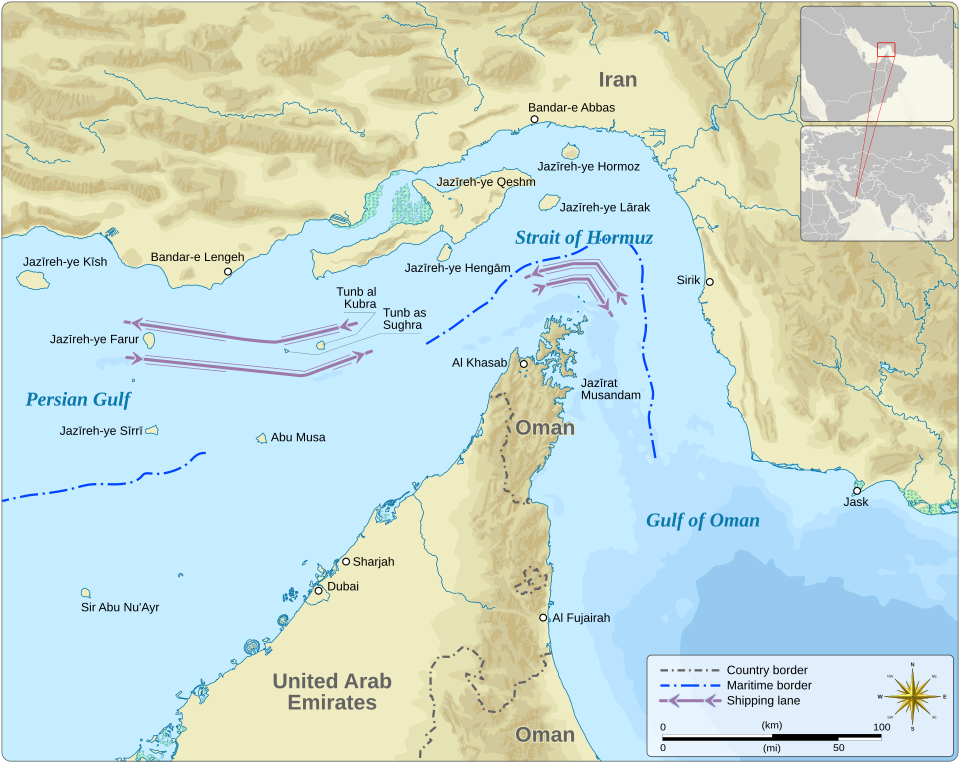

2026年2月28日，在伊美谈判取得进展背景下，美国和以色列未经安理会授权，袭击并杀害伊朗最高领导人，蓄意挑起对伊朗的战争。这是一场本不应该发生的战争。— 唐志超，中国社科院西亚非洲研究所
2026年2月—4月 · 数据来源：Trading Economics / Kaggle
截至2026年4月3日 · 至少8国直接受到军事影响

高价值目标打击、斩首行动与直接互射构成冲突重心。
美军基地与海湾基础设施让战争不再是单纯的双边对抗。
代理力量与远程打击把作战外沿推到海湾之外。
航运通道与油气运输线把军事升级直接传导为全球经济冲击。
给决策阅读者的压缩版结论：这场冲突同时作用于国家领土、联盟设施与全球贸易通道。
新华社、BBC、Al Jazeera、Reuters、AP、ABC News、CNN、NPR、纽约时报、华盛顿邮报等
ISW、CFR、求是网、中国社科院、Al Jazeera Centre for Studies、Britannica
Wikipedia时间线、IEA能源数据、Reuters油价预测、CNBC市场分析
所有关键事实均经至少两个独立信源交叉确认。中英文多语种源覆盖，力求客观中立。